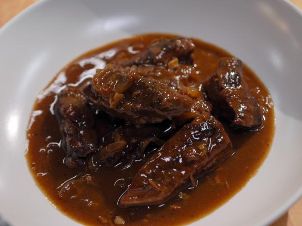

Ingredients
500g of cheap beef pieces (stewing steak usually is cheap)
500 mls of real ale
4 large onions
2 fat cloves of garlic
tbsp of plain flour
Method
Raw beef, roll it in the flour...fry 4N5 pieces at a time in a hot saucepan to
seal...put to one side when all done cut the onions into quarters...fry in the same frying pan as the beef...to soak up
the juices...
Towards the end of frying the onion (they should be nicely brown round the
edges) throw in the smashed up cloves of garlic.
Transfer the beef, onions, garlic to a deep casserole dish. Stir in the remaining
flour
pour on the bottle of beer N really, it isn't going to be wasted!!!
Cover, and cook at 150 for about and a half hours...will be gorgeous when it
comes out, trust me...serve with mash